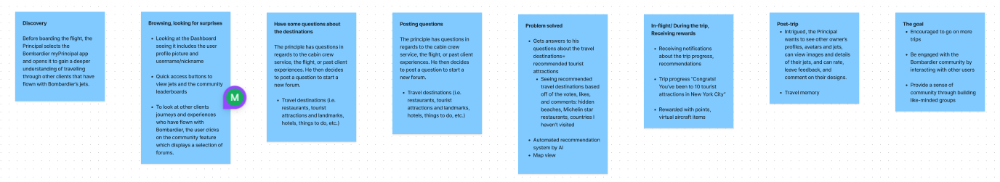

Gamification Research
Bombardier Project
OVERVIEW
ROLE
I worked on a project at Bombardier where we explored gamification for websites and applications to increase user engagement. We conducted research, collaborated with other teams, created storyboards and mockups, and eventually presented our gamification strategies to the executives.
UX/UI Designer
User Research, Interaction, Visual design & Prototyping
The process
The project started with an in-depth assessment of how gamification might improve user engagement with apps. At first, we concentrated on gathering user data and studying how other businesses had included gamification in their apps. Next, we developed generalized ideas specifically for Bombardier. We were able to develop app-specific gamification strategies through further research. The concepts that obtained the most votes were then chosen for further development, ensuring a focused and efficient improvement in user interaction throughout Bombardier's online platforms.
The Storyboards
Provided with ideas, we effectively started creating user cases and storyboards for each ideas which resulted in 8 storyboards. By creating storyboards, we were able to see the gamification components in action. Making moments that mattered was more important than earning points or badges. After much discussion and voting, we narrowed down our ideas to four master storyboards that presented engaging narratives for people to look at. It was at this point that our abstract concepts began to resemble actual features.

The Low-fidelity mockups
The project proceeded into the making of low-fidelity mockups after the storyboarding. Without becoming too involved in the minute details of aesthetics, these early designs focused on the gamification elements' core function and structure. The main objective was to define the user path and interface design, guaranteeing that the integration of gamification features was both comprehensible and easy to use.
(The image has been blurred to protect confidential content.)
The High-fidelity mockups
Finally, we polished our ideas into high-fi mockups. At this point, our concepts looked ideal due to complex designs. Together, the use of typography, imagery, and colors produced an illustration of the final result. It was an early glimpse at how interesting and dynamic our apps could be, ready for presentation to the directors and supervisors.